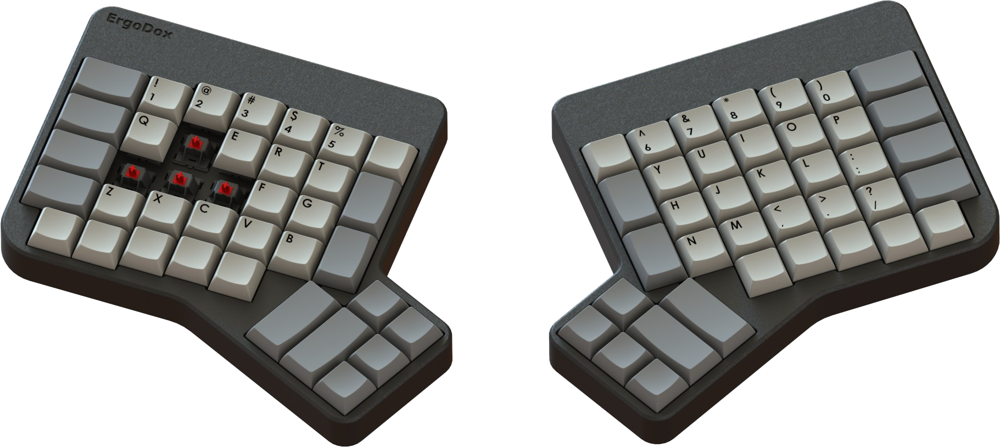
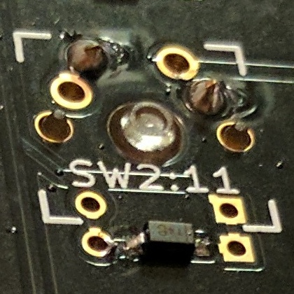

Introduction
This website is a community built and sponsered project to support and document the Ergodox Mechanical Keyboard.
If you want to contribute to the website, pull requests, bugs (via Github issues) can be filed at our Github
The ErgoDox keyboard is a DIY keyboard project kit originally developed by “Dox” (Dominic Beauchamp).
The printed circuit board was designed by “bpiphany” (Fredrik Atmer).
The original 3D printable case was designed by Dox but a far more popular and less expensive option was a layered acrylic design by litster.
Both the design and hardware files are licensed under the GNU Public License 3
What is the Ergodox Mechanical Keyboard?
The Ergodox is a do it yourself keyboard project designed with ergonomics in mind. It uses 76-80 Cherry MX style mechanical switches (such as Cherry or Gateron) laid out in an ortholinear (rather than staggered) layout with components that can easily be sourced. It’s completely programmable and can be flashed with several different firmware options.
The entire project (including this website) are Open Source, allowing you the freedom to modify and tweak the project as you see fit.
Assembling this project will require some patience, soldering ability, and access to a computer to flash the firmware onto the keyboard.

Guide
You’ll need to decide if you want to go with the standard 76 key or 80 key layout. Depending on your soldering ability and tools available, you’ll also want to decide if you’re going to use surface mount or through hole diodes.
Gather your parts, solder the board, build and flash your firmware and keep practicing, the new layout can take a bit to get used to.
Parts Needed
To build an Ergodox, several readily available components will need to be procured.
Some notes on the electronics:
The switches can be either pcb or plate mounted.
Both through hole or surface mount diodes can be used.
If you choose not to use typical 3mm red leds in your Ergodox, be sure that you replace the 220 Ω resistors with ones that match your leds.
PJRC sells a Teensy 2.0 both with and without header pins pre-installed. If you use a Teensy without the header pins pre-installed, you will need to obtain and install them.
Full Parts list:
- 1x Pair of pcbs (one for each hand)
- 1x Teensy USB Board, Version 2.0
- 24x Teensy header pins, male (unless pre-installed)
- 1x MCP23018-E/SP I/O expander
- 76-80x Cherry MX switches, number will depend on your layout.
- 76-80x 1N4148 diodes, SOD-123 package (Surface mount) or DO-35,(0.3” pitch) (through hole) (again, the amount needed will depend on your layout)
- 2x 2.2k Ω resistors (red, red, red)
- 3x 3mm T1 LEDs
- 3x ~220 Ω resistors, or match to LED. (red, red, brown)
- 5x Short jumpers (You can also use the clipped off legs from your resistors)
- 1x 0.1 µF ceramic capacitor (marked “104” for 10*104 picofarad). Not strictly necessary but suggested
- 1x USB mini B connector WM17115.
- 1x USB mini B plug with short cable (such as H2955)
- 1x USB cable male A to male mini B.
- 2x 3.5 mm TRRS sockets, CP-43514. FC68129 will also work if its extra pins are snipped off.
- 1x Cable with two 3.5 mm TRRS plugs.
- 1x Ergodox Keyboard case
Printed Ciruit Boards
The pcb files are available in a separate repo available here should you wish to modify and/or produce them.
There are several vendors who generally stock some of the older revisions of the pcbs.
You could also buy the updated pcb from your vendor of choice by providing them the KiCad or Gerber files in the repo listed above or purchase a batch from OSH Park
Small Electronics
Many of the small components can be easily found online at vendors such as Mouser or Digikey
Case
There are other options available (such as cases carved out of wood) but generally Ergodox cases are either 3D printed, or layered, acrylic sheets.
-
The 3D printable case options are available in our repo and have been uploaded to Shapeways
-
The most popular and less expensive option is the layered acrylic design. Github Repo assembled with m3 bolts.
- There is also a 3D printable tenting stand in our repo. This will prop up the Ergodox at a very natural and comfortable angle.
Assembly Guide
Now the section where the soldering and real assembly happens, at the end of this section there will be a couple external links to other build guides including a photo build guide and a video build log.
- Arrange the pcbs face down, and solder in your diodes to this side.
- 1a. If you’re using the surface mount diodes, place them on the small square copper pads but be sure to orient the diodes so that the line on the diode faces the square hole. Solder the diodes and repeat for each switch on both hands.
- 1b. If you are using through hole diodes, place them through the two hole immediately to the left and right of copper pads under the square that the switch will take up. Be sure to check your orientation to be sure that the line on the diode is closest to the square hole. Solder and repeat for each switch on both hands.
- 
-
Flip both the pcbs over, this face up side (without the diodes) will be the side you will place all of the remaining components.
- Insert both the 2.2k ohm resistors and 220 ohm (or whatever resistors chosen appropriate for your leds) onto the right hand where labled on the pcb and solder into place.
- Note: Keep the legs you clip off the resistors, you can use them in a later step when we install the TRRS connections.
- On the left hand pcb, insert the I/O expander around the MCP23018 rectangle. Solder the legs in place.
- Note: There are three holes without copper pads and do not need to be soldered.
- (Optional but suggested step) On the left hand pcb, insert your ceramic capacitor into the first and third holes of the top row and solder in place.
- 5a. Bridge with solder the two copper pads immediately to the left of the ceramic capacitor.
- Insert either jumper wire or the legs clipped from the resistors bent into a U, into both of the the white pairs of holes on either side of where the 3.5mm connections will go and solder in place.
- 6a. Place 3.5mm connection, solder the 4 connection points.
- 6b. Repeat both the jumper and 3.5mm connectors on the other hand.
- Install the male jumper pins to the underside of your Teensy with the button face up and solder the pins to the top side of the Teensy.
- Note: If your Teensy already has jumpers already installed, skip this step.
-
Insert your Teensy jumper legs onto the right hand side with the usb facing the resistors and solder in place.
- Cut one of the mini usb cables about 1.5” from the connector.
- 9a. Strip off all of the sheathing from the cable, exposing the 4 wires.
- 9b. Place the following wires into their respective holes:
- White: D-
- Red: 5v
- Green: D+
- Black: GND
- 9c. Solder wires to the pcb.
-
On the right hand, insert the mini usb connector into the holes marked on the pcb and solder into place.
- Ready the case of your choosing, depending on which design you picked.
- 11a. If you are using the layered acrylic case design, peel off the protective film off the acrylic pieces.
- Place the pcb under the 3rd acrylic layer and insert the switches into the acylic plate making sure that both pins from the switch are extending out through the pcb.
- 11b. If you are using the 3D printed or other 2 piece case design
- Place the pcb under the top section and push the switches into the case making sure that both pins from the switch are extending out through the pcb.
- Solder switches in place.
- 11a. If you are using the layered acrylic case design, peel off the protective film off the acrylic pieces.
- On the right hand, insert your three leds through the housing of the three switches and solder into place.
- Note: LEDs have polarity so be sure that your positive leg of your leds goes into the (face up) square hole.
- Finish assembling your case, plug in your TRRS cable between the two halves and proceed to building and flashing your firmware.
- More the video type? YouTube has several other good guides, this one I think does an excellent job of balancing information and length.
- Imgur Build Log: user robotmaxtron shares his build log (including mistakes).
- Massdrop also has a really great guide for assembly.
Firmware Guide
There are a number of options for the firmware powering your keyboard, each with their own sets of features and options. Please consult the firmware of your choice for specific instructions on how to use it.
QMK
A build guide for compiling and customizing your firmware is best found in the repo’s readme
TMK
Online Massdrop Configurator
Massdrop has developed an online tool for generating Ergodox keymaps without the need to compile your own firmware, suggested for users who might not be comfortable compiling their own firmware.
Original Ergodox Firmware
This firmware has fallen out of favor due to QMK and TMK’s improved functionalty and larger community support. The project has not had much movement since late 2015.
Flashing your Ergodox
Flashing your Ergodox is typically done with the Teensy Loader, and will be needed for the following guide.
- Locate your .hex file generated by your firmware of choice
- Start the Teensy Loader program
- Load the .hex file into it.
- Press the Reset button by pressing the reset button onboard the Teensy, you may need to insert something such as a paperclip or small screwdriver gently into the reset hole in the top right corner of your case.
- Note: Some firmware (such as QMK and TMK) allow for this to be programmed as a keycode.
- Click the button in the Teensy app to upload the firmware to your keyboard.
Variants
The Ergodox by nature as an open source project has been forked and changed since it’s initial design, the following projects are just a selection of the more popular ones.
Infinity
Quickly becoming the most popular variant of the Ergodox and developed by Input.club, the Ergodox Infinity has an LCD screen built into each half with a few other updates to the original design.
Firmware options:
Cases:
Printed Circuit Board:
Differences between the original Ergodox and the Infinity:
- per switch backlighting
- usb c replaces trrs between the two halves
- pre-soldered smd components
- led screens on each keyboard half
- proper costar stabilizer support
- proper ALPS support
EZ
Another popular fork of the Ergodox is a pre-built version with a case that supports legs that will allow you to ‘tent’ or angle the Ergodox-EZ to a comfortable typing angle.
Firmware:
Differences:
- Preassembled
- Optional tenting legs